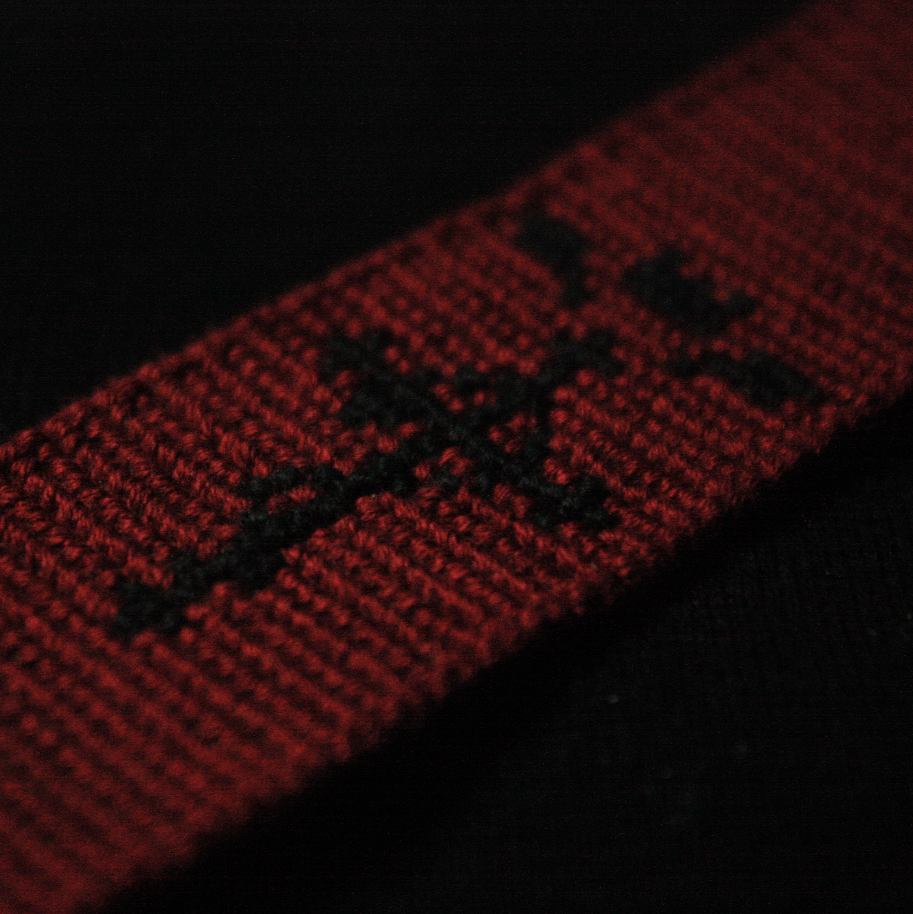
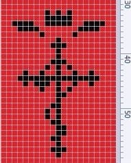

РАЗДЕЛЫ
Главная
Прямое плетение
Косое плетение
Материалы
Источники
Прямое плетение
В прямом плетении существуют нити основы, ведущая нить и нити, вплетающиеся в процессе плетения. Узелки распологаются "пикселями": ряд к ряду, строка к строке. По сути, любой пиксельный рисунок может стать схемой прямого плетения.
Примеры работ и процесс плетения:
 
Существует онлайн генератор схем прямого плетения, перейти к нему можно кликнув на этот логотип: